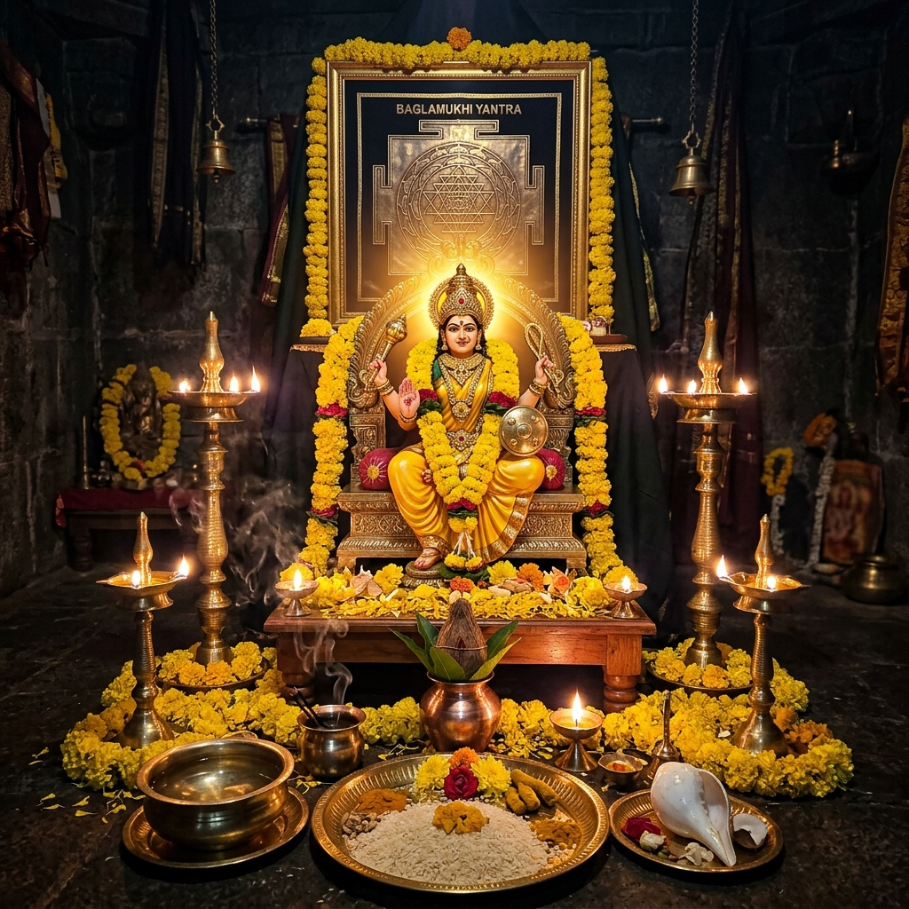
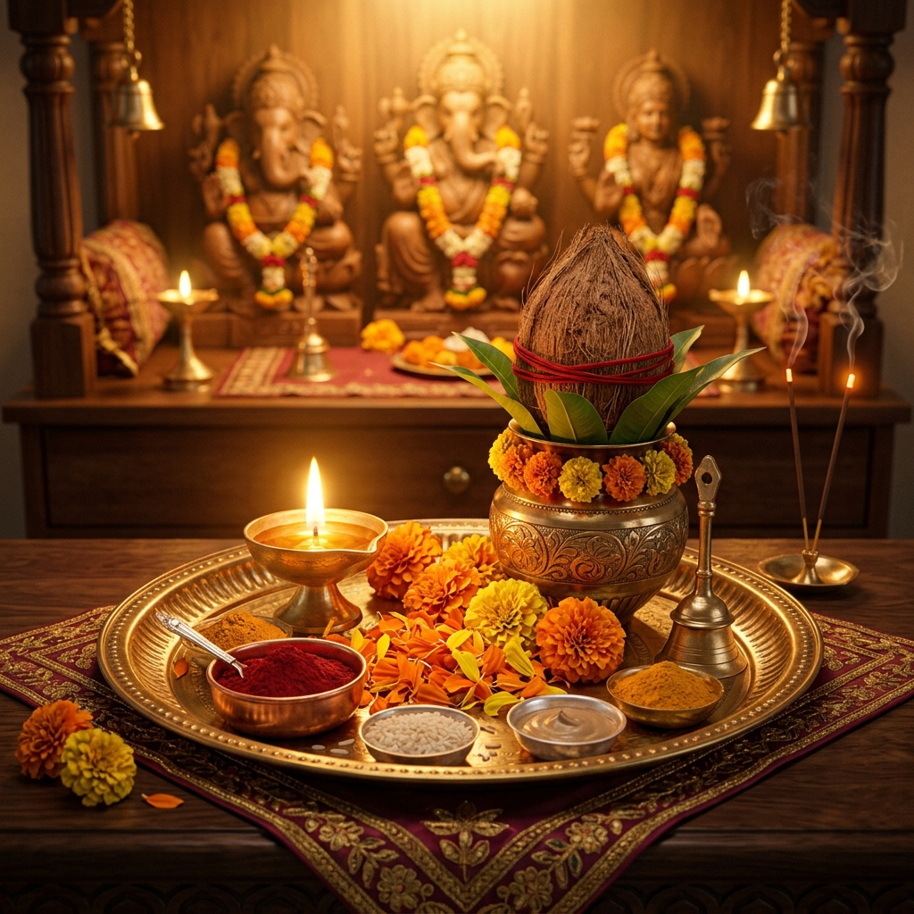
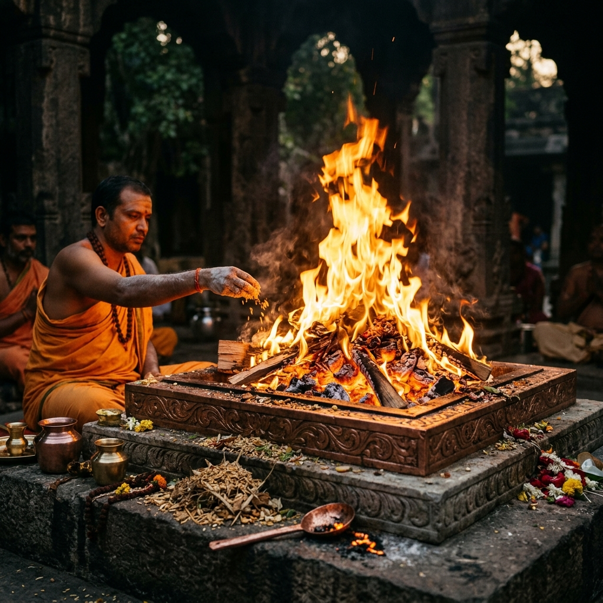
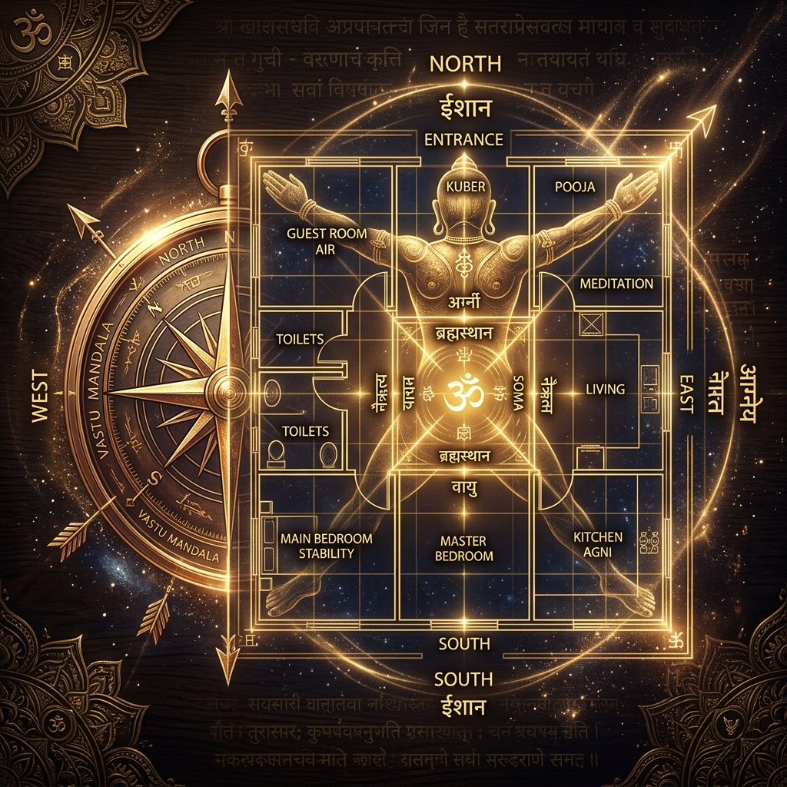
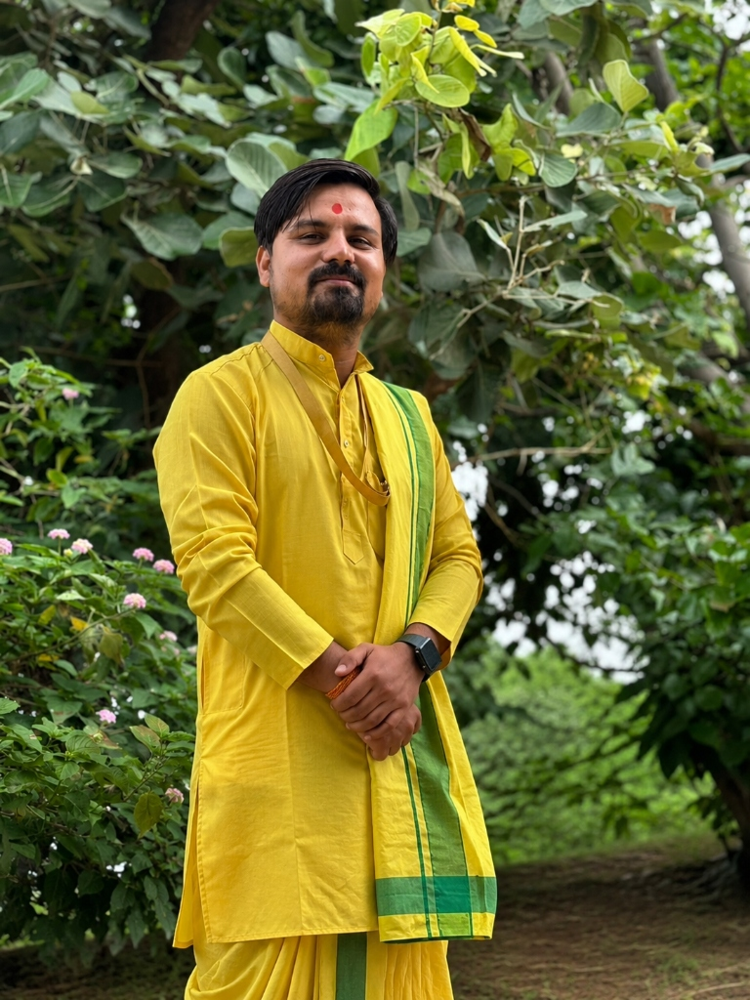
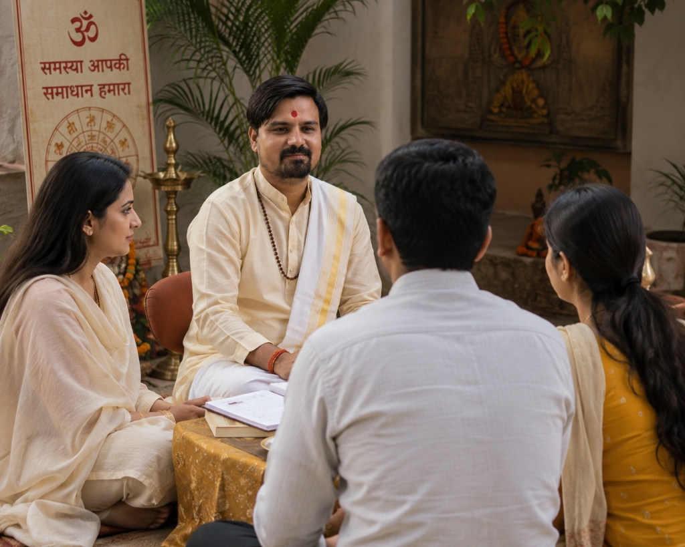
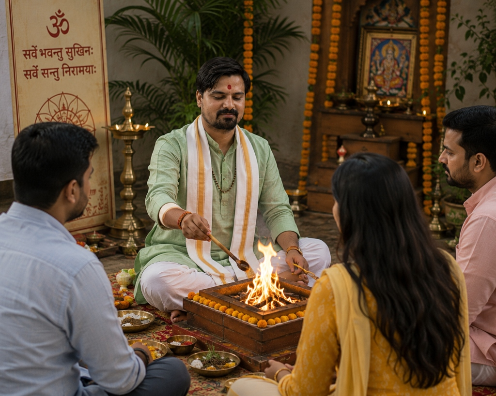
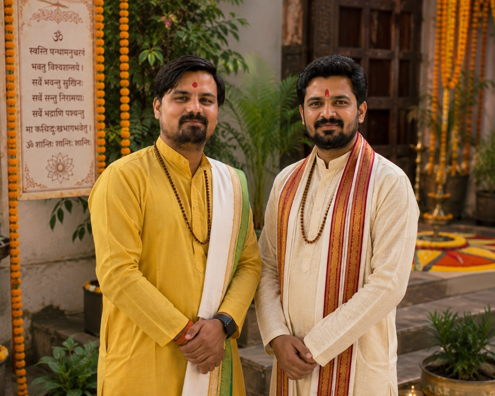
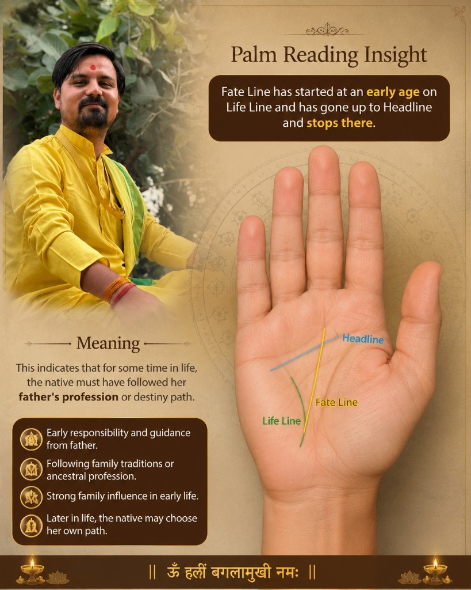

Pandit Lakhan Sharma — Online, Siddh Peeth Nalkheda & Doorstep Home Visit Puja Services
World-renowned Siddh Peeth Maa Baglamukhi Dham, Nalkheda (M.P.). Book Live Video Call Online Sankalp Puja, participate in sacred Maha-Havan at Nalkheda Temple, or invite Pandit Ji for Doorstep Home Visit Puja across India. Accurate solutions for court cases, obstacles, and Vastu Shanti.
Sacred Puja Services by Pandit Ji — Tailored to Your Convenience
Pandit Lakhan Sharma is a senior devotee at Siddh Peeth Maa Baglamukhi Temple, Nalkheda. Devotees can choose from 3 sacred options: Live Online Video Call, Visiting Nalkheda Temple in Person, or Pandit Ji Home Visit at your doorstep across India:
1. Online Live Sankalp Puja
If you cannot travel to Nalkheda, Pandit Ji conducts authentic Vedic Sankalp with your Name & Gotra via Live Video Call directly from the Siddh Peeth Yajnashala.
- ✓ Live Video Darshan: WhatsApp / Zoom video call for family participation.
- ✓ Vedic Mantra Japa: Authentic ritual offerings by Pandit Ji and Vedic Brahmins.
- ✓ Blessed Prasad Delivery: Energized Yantra, Raksha Sutra, Bhasma & Prasad delivered via Speed Post.
2. Maa Baglamukhi Dham Nalkheda
Devotees can visit the revered Siddh Peeth Maa Baglamukhi Temple at Nalkheda and sit alongside Pandit Lakhan Sharma in the sacred Yajnashala for Maha-Havan and Anushthan.
- ✓ Sacred Agni Kunda: Direct participation in offerings at the historic Pitambara sacrificial altar.
- ✓ Court Case & Enemy Relief: Intense 1.25 Lakh mantra jaap, enemy vanquishing & obstacle removal.
- ✓ Stay & Travel Guidance: Complete assistance for Nalkheda arrival, Muhurat selection, and comfortable stay.
3. Pandit Ji Home Visit Puja
Pandit Lakhan Sharma and team of learned Vedic Brahmins personally visit your home, commercial premise, or city to perform authentic sacred rituals.
- ✓ Major Ceremonies: Griha Pravesh, Vastu Shanti, Maha Mrityunjaya Jaap, Navchandi Yajna & Marriage.
- ✓ All-India Doorstep Service: Delhi NCR, Mumbai, Jaipur, Lucknow, Indore, Bhopal, Bengaluru & any city across India.
- ✓ Scriptural Purity: Auspicious Muhurat calculation, Havan Kunda setup & complete sacred samagri guidance.
Wisdom from a Sacred Lineage
Pandit Lakhan Sharma hails from a traditional Brahmin family, carrying forward generations of spiritual mastery. Based in Agar & Nalkheda, India, he has earned a global reputation as a renowned astrologer and ritual specialist.
"My mission is to guide seekers through the celestial dance of planets, providing remedies that bridge the gap between human effort and divine grace."
Our Sacred Services
Baglamukhi Havan
We perform baglamukhi havan on special request. Different havan samagri is used for baglamukhi havan for different types of problems. Mother vanquishes the wicked, troublesome obstacles and enemies.

Baglamukhi Anushthan
Everybody reads all the evils in the mouth. This mantra of Maa Baglamukhi is an unimaginable weapon which, after experiment, your life can be free from enemy obstacles and life struggles.
Astrology (Business, Love, Health)
Our astrology specialist provides guidance for bringing happiness, success and luck in living beings, resolving business, love problems, career trajectory, and health concerns.

Pandits For Puja (House, Office, Marriage)
पंडित लखन शर्मा जी द्वारा ऑनलाइन, नलखेड़ा धाम अथवा संपूर्ण भारत में यजमान के घर/कार्यालय पधारकर गृह प्रवेश, वास्तु शांति, सत्यनारायण कथा व विवाह संस्कार वैदिक विधि से संपन्न कराए जाते हैं।

Pandit For Havan
A Havan is also known as a Hom, Homan, Yagya or Agnihotra. Havan is a Sanskrit word and it means a ritual wherein the devotees make offerings to the Fire as divine worship.

Vastu Shastra Consultants
Vastu means the dwelling of humans and Gods. Vastu shastra is an ancient science which helps one get the benefits freely offered by the basic elements of the universe.
Vedic Astrologers
Vedic Astrologer is one of the rare, new age, unconventional online vedic astrologers in India who is well educated, highly qualified, tech savvy, widely traveled, straightforward.
Palmists
Fate Line has started at an early age on Life Line and has gone up to Headline and stops there. For sometime, the native must have followed her father's profession or destiny path.
Kalsarpa Pooja & Dosh Shanti
Specialized Kalsarpa Dosh Nivaran Puja, Rahu-Ketu Shanti, and Pitra Dosh Shanti conducted at Siddh Peeth Nalkheda to remove obstacles, career stagnation, and mental unrest.
Serving Devotees Across All Major Indian Cities
Pandit Lakhan Sharma provides authentic Online & In-Person Baglamukhi Anushthan, Vedic Kundali Analysis, Vastu Shastra Consultation, and Dosh Shanti Pujas for clients in all major metros, tier-1 & tier-2 cities across India:
Maa Baglamukhi Anushthan
Maa Baglamukhi Temple in Nalkheda is one of the three major Siddh Peethas in India. Performing special Pujas and Havans under Pandit Lakhan Sharma's guidance invokes immense divine energy for victory over obstacles and spiritual elevation.
"I do not have any words to thank Pandit Lakhan Sharma because they showed me the best way to regain my health, which has improved significantly since our consultation."
Rituals & Dham Gallery

Pandit Lakhan Sharma

Kundali & Horoscope Guidance

Baglamukhi Havan & Yajna

Pandit Ji & Vedic Scholars
Pandit Lakhan Sharma
Pandit Lakhan Sharma Services
Maa Baglamukhi Beej Mantra

Palm Reading & Destiny Insight
Contact Us
Seek guidance from the celestial realms. Whether you require a Baglamukhi Anushthan, Vedic consultation, or spiritual clarity, our sanctuary is open to your inquiries.
Our Sanctuary
Arihant Colony, Dharola Road, Nalkheda
Madhya Pradesh - 465445Have A Question?
Pandit Lakhan Sharma is a renowned astrologer based in Nalkheda, Agar Malwa, India, serving souls globally with divine wisdom. Your path to clarity begins with a single step. Reach out for consultations regarding Baglamukhi Havan, Vastu Shastra, or Vedic Astrology.
Confidentiality Guaranteed
Your data remains sacred and private.
Begin Your Spiritual Journey
Connect with the ancient power of Baglamukhi. Let Pandit Lakhan Sharma guide you through the cosmic shadows towards the light of prosperity and peace.